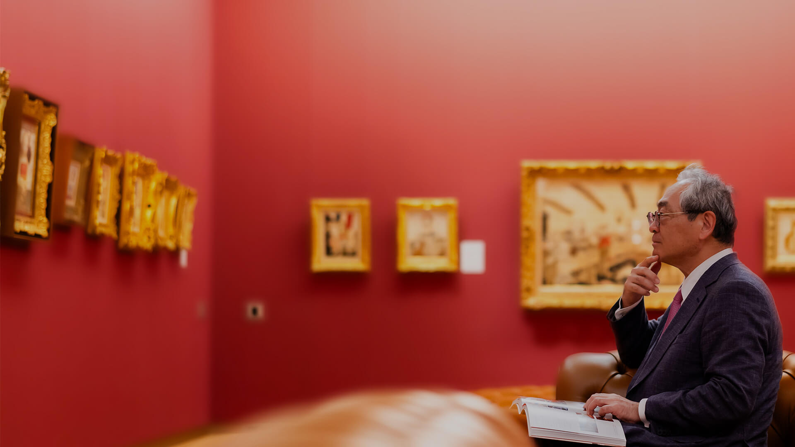
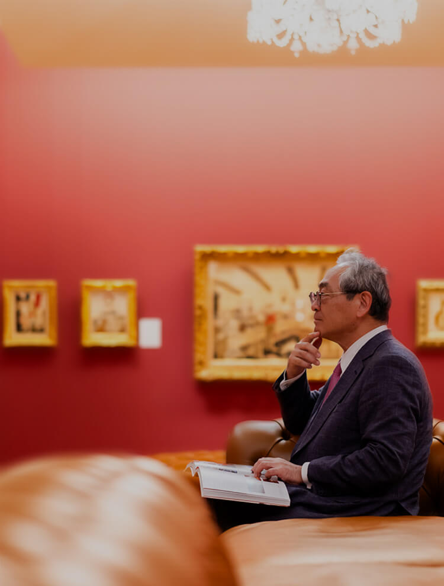
めきき
HERITAGE AND
THE SPIRIT OF CRAFTSMANSHIP
CRAFTSMANSHIP軽井沢安東美術館
軽井沢の魅力と癒しの空間
「藤田嗣治」との出会いから生まれた美術館
-
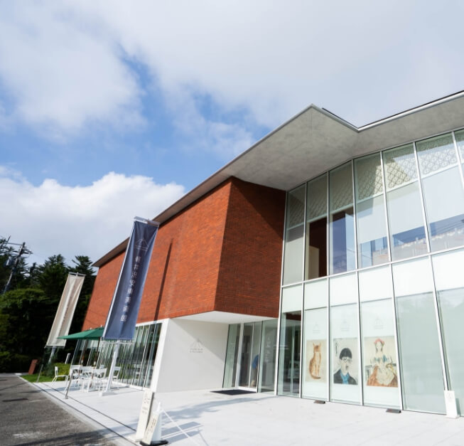
-
image photo
-
軽井沢は、四季折々の美しい風景と静かな環境が魅力の日本有数の避暑地です。
安東氏は、人生の最も悩んでいた時期に軽井沢に長期滞在し、自然豊かな環境と藤田嗣治の作品に癒されました。軽井沢の自然は『屋根のない病院』とも言われ、その豊かな緑の中で、安東氏は魂の救済を得ました。藤田嗣治の作品との出会いもこの地での出来事であり、美術館の設立は自然な選択でした。
-
その体験を背景に建設された軽井沢安東美術館は、軽井沢の魅力と藤田嗣治の芸術が融合した特別な空間です。
軽井沢駅から美術館までの道のりには、春には桜やツツジ、初夏にはスイレン、秋には紅葉が楽しめる矢ケ崎公園があり、訪れる人々に自然の美しさを感じさせます。この環境は、都会の喧騒から離れ、心身をリフレッシュするための理想的な場所です。
軽井沢と藤田嗣治の芸術が融合したこの美術館は、訪れる人々に深い癒しと感動を提供します。
NEWS & TOPICS
New Release in Karuizawa Area

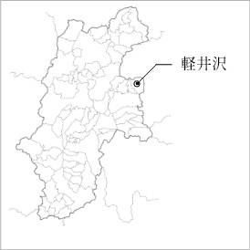
- （仮称）軽井沢長倉プロジェクト
エスコンは下記の通り、長野県北佐久郡軽井沢町において、新規事業用地の取得を行いましたのでお知らせいたします。
当該新規事業用地は、しなの鉄道・北陸新幹線「軽井沢」駅まで車で約10分、最寄りの「碓氷軽井沢 IC」からもアクセスしやすい塩沢エリアに位置します。
会員様には、最新情報や
特別な商談機会をいち早くお届けします。
藤田嗣治の世界を紡ぐ
軽井沢安東美術館
軽井沢安東美術館は、実業家の安東泰志氏と恵夫人が蒐集した約200点の作品を収蔵し、藤田嗣治の作品だけを展示する日本初の美術館として2022年10月8日に開館しました。この美術館は、藤田嗣治の初期から晩年までの作品を網羅的に展示し、彼の芸術の変遷を辿ることができます。特に、安東夫妻が好んで蒐集した「少女」と「猫」をテーマにした作品が並ぶ部屋は、多くの来館者に愛されています。
美術館の設計には「自邸のような美術館」というコンセプトが貫かれています。美術館の設計には、安東邸を再現するために英国製のレンガを使用し、各展示室は色彩豊かで、赤い壁の展示室にはシャンデリアやソファが配置されており、来館者に居心地の良さを提供しています。藤田嗣治の一生を時系列でたどる展示は、彼の芸術的な成長と変化を理解するために重要です。美術館は、ホワイトキューブのような白い壁ではなく、藤田の時代や生活を感じさせる色彩豊かな空間で、その独特の世界観を再現しています。
美術館の1階には、サロンスペース「サロン ル ダミエ」があり、ここではフリードリンクを楽しみながら、作品解説動画を視聴できます。また、定期に開催されるコンサートでは、アーティストの演奏を身近に感じながら楽しむことができます。さらに、併設のカフェとレストランでは、軽井沢の豊かな自然の中で贅沢なひとときを過ごすことができます。
軽井沢安東美術館 代表理事
安東 泰志（あんどう やすし）
投資ファンドのニューホライズンキャピタル取締役会長。
1981年東京大学経済学部卒業、1988年シカゴ大学経営大学院（MBA）修了。
三菱銀行（現・三菱UFJ銀行）出身。2002年から企業再生・再編ファンドを率いて、三菱自動車、東急建設、日立ハウステックなどの事業再生や中小・中堅企業の事業承継に携わる。2017-2018年東京都顧問として都政に従事。事業再生実務家協会常議員。UWC ISAK監事。
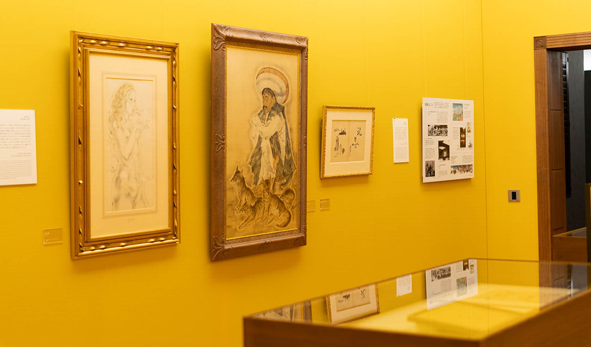
「感性とこだわりが紡ぐ
プライベートコレクション」
藤田嗣治の美術館
安東泰志氏と恵夫人が長年にわたり蒐集してきた藤田嗣治の作品だけを展示する、個人のコレクションを原点とした美術館です。美術館のコレクションは、何よりもまず安東夫妻の「感性」に響くかどうかが重要な基準となっています。
藤田嗣治の作品に対する夫妻の深い愛情と感性が、この美術館の核を形成しており、展示作品は全て夫妻が個人的に気に入ったものばかりです。その上で、時代を網羅できるか、他にはないユニークな作品か、そして美術館のコレクションとしての価値を高めるかという要素が考慮されています。
-
-
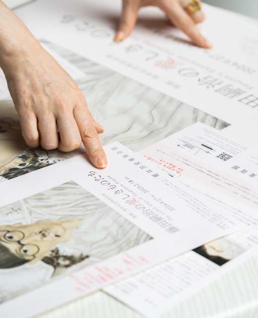
美術館設立の背景には、安東氏が60歳の時に抱いた「このコレクションを後世に残したい」という強い思いがありました。自宅に飾り、対話を楽しんでいた作品を、もし何かあったときにも守り続けるため、そしてその価値を広く共有するために、美術館という形で公開することを決意されたのです。
こうして誕生した軽井沢安東美術館は、安東夫妻の美術に対する情熱とこだわりが凝縮された空間となっています。ここでは、プライベートな感性とプロフェッショナルな視点が融合し、藤田嗣治の芸術を深く味わえる特別な場所が提供されています。
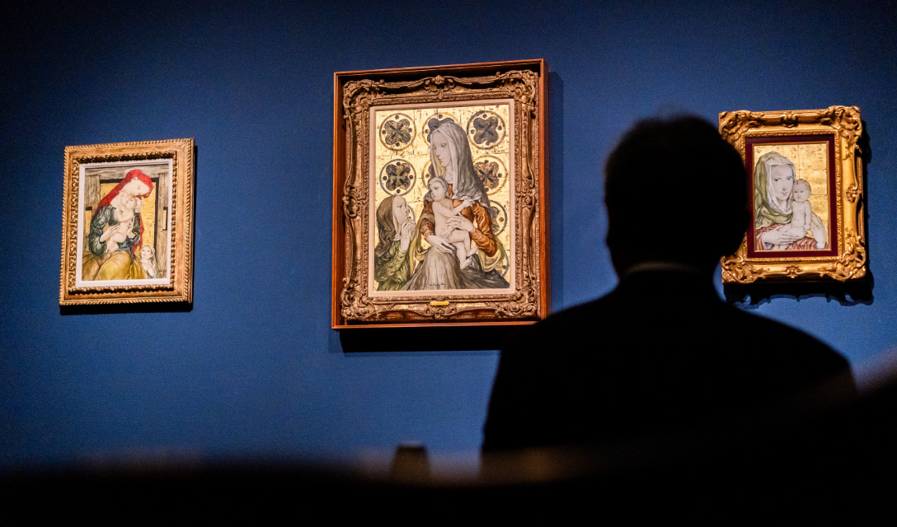
「魂の救済を願う場所」
藤田嗣治の美術館で得る癒しと力
藤田嗣治の人生と作品を通じて、人々の魂を救済することを目的に設立されました。美術館の設立者である安東泰志氏と恵夫人は、藤田の作品に触れることで、人生の困難や転機において癒しと力を得てきたと語ります。藤田の作品は、彼自身が10年ごとに迎えた転機や挫折を乗り越える過程で生み出されたものであり、その変遷は私たちの人生とも重なります。
安東氏は、辛い時期に藤田嗣治の「少女」と「猫」の作品に出会い、その中で心の癒しと力を得ました。彼はその経験を基に、この美術館が同じように訪れる人々に魂の救済を提供できる場所でありたいと願っています。
-
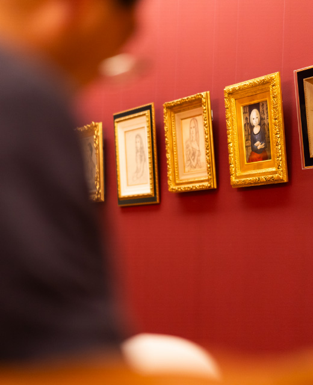
-
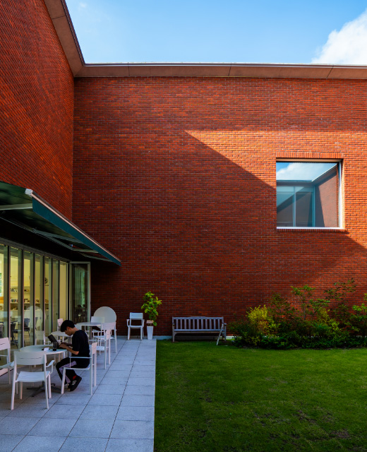
美術館は、通常の展示空間とは異なり、来館者が心地よく過ごせるように工夫されています。また、定期的に一流の演奏家によるコンサートが開催され、この地域の文化発信拠点としても機能しています。来館者が心を洗われ、癒しを得る空間を目指し、職員一同が一生懸命取り組んでいます。軽井沢安東美術館は、藤田嗣治の芸術を通じて、人々の心に寄り添い、魂の救済を提供する特別な場所です。
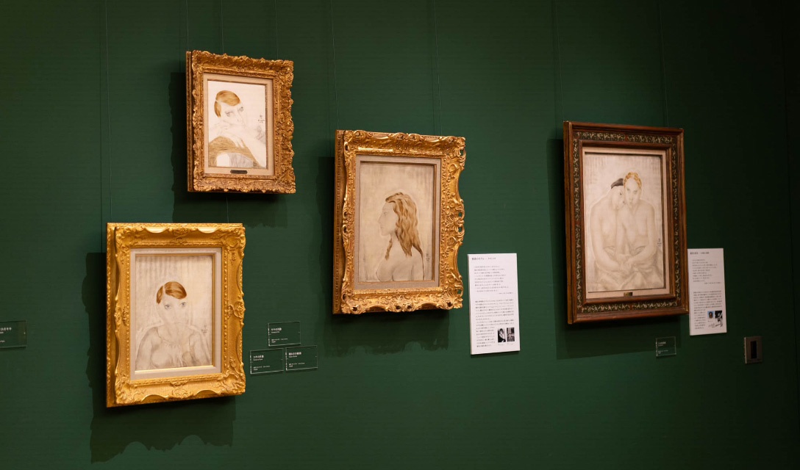
美術と共に未来へ
「軽井沢安東美術館」の想いと展望
美術館は、単なる展示空間を超えて、来館者が藤田の作品と対話し、心の癒しと力を得られる場所として設計されています。安東氏は、自らが藤田の作品に支えられてきたように、多くの人々にも同じような癒しを提供したいと考え、この美術館を創設しました。来館者が作品を通じて自らの魂と向き合い、内なる平和を見出すことを願っています。
-
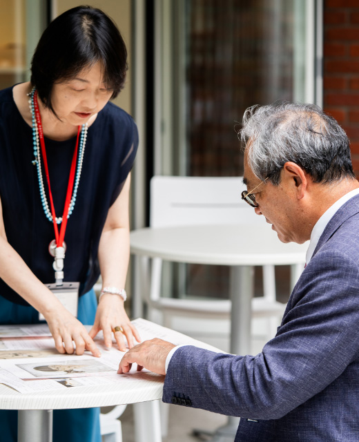
-
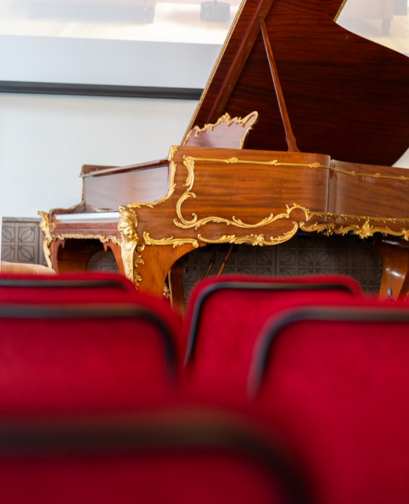
また、美術館は今後、藤田嗣治の研究と作品の発信拠点としての役割をさらに強化していきます。また、国内外の美術館との連携や地域文化の発信拠点として、一流の音楽家や伝統芸能師を招いたイベントの開催など、多様な文化体験を提供することを目指しています。
安東氏は、美術館の活動を通じて「魂の救済」というテーマを追求し続けています。その一環として、UWC ISAKという国際的な教育機関も支援していますが、軽井沢安東美術館は、藤田嗣治の芸術を通じて多くの人々に癒しと希望を届ける場として、これからも進化を続けていきます。
安東美術館が創り出す豊かな暮らし
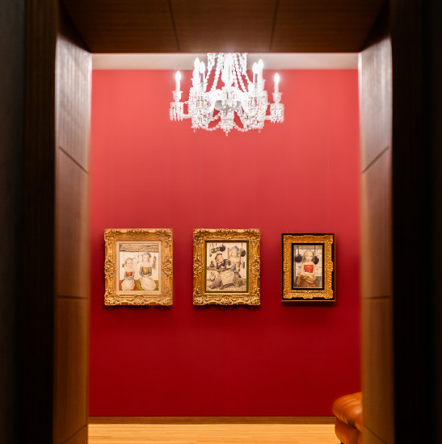
軽井沢安東美術館が藤田嗣治の作品を通じて訪れる人々に癒しを提供するように、私たちが暮らす空間もまた、人々にとって心の拠り所であることが大切だと感じます。エスコンが掲げる『ライフデベロッパー』という理念に基づき、住まいやオフィスが日常の中で安らぎをもたらす空間であることが望ましいのではないでしょうか。例えば、エントランスに心安らぐアートを配置することで、住む人々に日々の癒しを感じてもらえるような工夫が求められています。このような配慮が、豊かな生活空間の創造につながるのではないかと考えます。
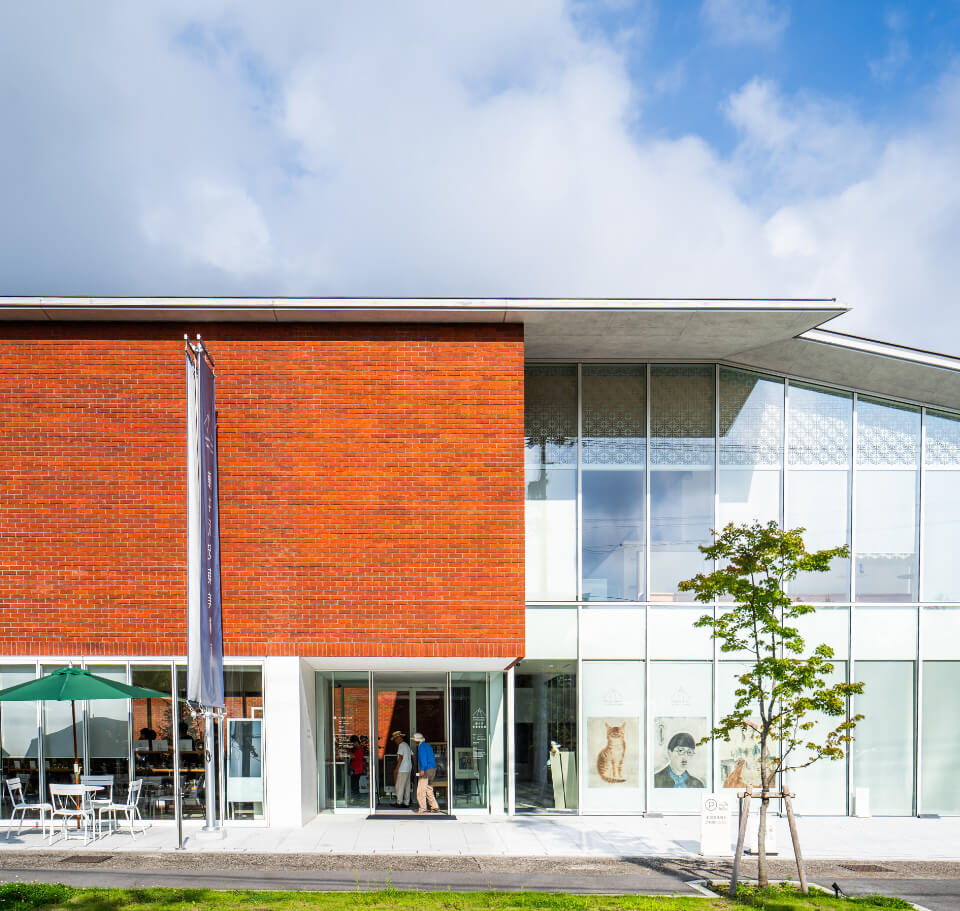
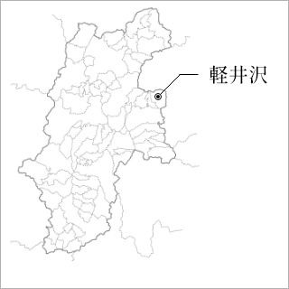
New Release in Karuizawa Area
エスコン
軽井沢エリアにおける新規取得事業用地
（仮称）軽井沢長倉プロジェクト
会員様には、最新情報や
特別な商談機会をいち早くお届けします。